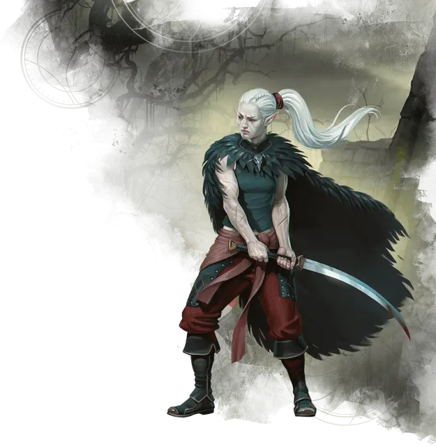

Шадар-кай
Shadar-Kai

Шадар-каи - эльфы Царства Теней, изначально увлечённые в это ужасное царство Королевой Воронов. На протяжении веков некоторые из них продолжали служить ей, в то время как иные отважились отправиться на Материальный план, чтобы вершить свои собственные судьбы.
Когда-то шадар-каи были Феями, как и остальные их эльфийские сородичи; теперь они существуют в состоянии между жизнью и смертью, благодаря трансформации зловещей энергией Царства Теней.
У Шадар-каев пепельный оттенок кожи, и пока они находятся в Царстве Теней, они также становятся иссохшими, отражая зловещую природу этого мрачного плана.
Особенности шадар-кая
Вы обладаете следующими особенностями.
Увеличение характеристик. Либо значение одной характеристики по вашему выбору увеличивается на 2, а другой — на 1, либо значение трёх различных характеристик по вашему выбору увеличивается на 1.
Возраст. Как и другие эльфы, шадар-кай может прожить более 750 лет.
Скорость. Ваша базовая скорость ходьбы — 30 футов.
Вид существа. Вы — Гуманоид. Вы также считаетесь эльфом для любого необходимого условия или эффекта, который требует, чтобы вы были эльфом.
Размер. Ваш размер — Средний.
Тёмное зрение. На расстоянии 60 футов вы при тусклом освещении можете видеть так, как будто это яркое освещение, и в темноте так, как будто это тусклое освещение. В темноте вы не можете различать цвета, только оттенки серого.
Наследие фей. Вы с преимуществом совершаете спасброски для того, чтобы избежать или окончить на себе состояние очарован.
Благословение Королевы воронов. Бонусным действием вы можете магическим образом телепортироваться в свободное пространство на расстояние до 30 футов вашей видимости. Вы можете использовать эту особенность количество раз, равное вашему бонусу мастерства. Вы восстанавливаете все потраченные использования по окончании продолжительного отдыха.
Начиная с 3-го уровня, при телепортации с помощью этой особенности, вы также получаете сопротивление всему урону. Сопротивление длится до начала вашего следующего хода. В течение этого времени, ваш облик становится призрачным и полупрозрачным.
Некротическое сопротивление. Вы получаете сопротивление урону некротической энергией.
Обострённые чувства. Вы получаете владение навыком Восприятие.
Транс. Вам нет необходимости спать, и вас невозможно магически усыпить. Вы можете закончить продолжительный отдых за 4 часа, если проводите это время в медитации, подобной трансу, во время которой вы сохраняете сознание.
Всякий раз, когда вы заканчиваете этот транс, вы можете получить два владения, которых у вас нет, каждое из которых должно быть оружием или инструментом по вашему выбору, выбранным из «Книги игрока». Вы мистическим образом приобретаете эти владения, извлекая их из общей эльфийской памяти, и сохраняете их до тех пор, пока не закончите свой следующий продолжительный отдых.
Языки. Ваш персонаж может говорить, читать и писать на Общем и ещё одном языке, который по вашему мнению подходит для персонажа.